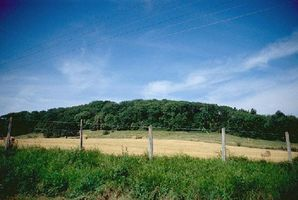
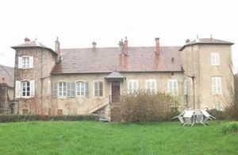
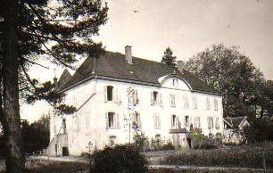
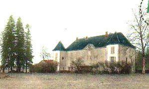
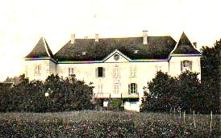
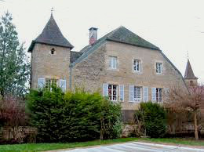

Recensement Jean-Claude Truffet
| Département | 39 — Jura |
| Canton | Lons-le-Saunier |
| Commune | Lons-le-Saunier |
| Type d'édifice | Château |
| Période d'origine | XII-XVIII |






PYMONT; fut gouverné par les Vienne jusqu'en 1369 où Marguerite de Vienne le cède à Hugues de Chalon. En 1295, les barons comtois se révoltent contre Philippe le Bel et se soumettent en 1301. En 1340, Philippe de Vienne est excommunié pour fausse monnaie. La peste noire touche le château de Pymont en 1349. Lors du passage des grandes compagnie en Franche-Comté, l'une d'elles prend le château en 1369 sous le commandement de Jacques Huet en attaquant la garnison par surprise; le château est repris peu de temps après. En 1400, il est vendu à Jacques de Vienne. Claude du Pin est seigneur de Pymont en 1464, c'est le dernier seigneur connu. Leur fils Philippe de Vienne se maria avec Agnès de Chalon, fille de Hugues et de de la comtesse palatine de Bourgogne (Alix), mais dut faire hommage de ses terres et de sa forteresse à Jean de Chalon-Arlay Ier . Il eut deux épouses et de nombreux enfants; il fut inhumé à Cîteaux.
Guy de Vienne fut dépossédé de son château par Jean de Chalon-Arlay II. Dès lors le château et son fief ne cessèrent de changer de propriétaire. Ainsi en 1682 ils furent achetés par Emmanuel
Jacquemet, bourgeois de Lons, puis revinrent en 1831 à la famille Oudet.
COURLANS et Chavannes formaient une seigneurie particulière relevant du château de Montmorot. En 1372, Jean de la Tour était le seigneur de Courlans. Une rue porte encore son nom. Bâti au XVIIIe siècle est situé au fond d'une vallée et se trouve sur l'emplacement d'une ancienne tour dite de Chardenoy.
Il ne reste plus rien du château de Pymont. Au sud du château se trouvait une enceinte grossièrement rectangulaire qui abritait la basse-cour où se trouvaient la garnison et la population qui se réfugiait dans le castel en cas d'attaque. Cette muraille est flanquée d'une tour circulaire et est protégé par un fossé sec, appelé "fossé à dos-d'âne". Au nord se trouvait le donjon, défendu par une seconde enceinte, la chemise qui ferme l'espace réservé au seigneur et à ses proches par un pont-levis. On pouvait accéder à la cour seigneuriale par une poterne à deux arbalètes. Une citerne située au pied du donjon permettait de régler les problèmes d'eau potable. Au nord et à l'est du donjon se trouvaient un verger et un jardin accolé au système fortifié. L'enceinte de la basse-cour épouse le premier escarpement rocheux. Le donjon est sur le point le plus élevé, il était construit sur le rocher pour en assurer la solidité. Le château de Courlans est situé au fond de la vallée sur la rive gauche de la Vallière. Il fut bâti au XVIIIe siècle sur l'emplacement d'une tour, dite de Culay. Il était entouré autrefois de plusieurs bâtiments, mais il ne reste aujourd'hui que le principal dont la forme est un parallélogramme rectangle flanqué de deux tours quadrangulaires.
Famille de Vienne
"
Motte féodal de Pymont, château de Courlans